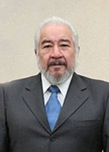

Magistrado José Alejandro Luna Ramos
Nació en San Cristóbal de las Casas, Chiapas, el 23 de marzo de 1941. En este lugar realizó su instrucción básica, media y superior. Es egresado de la Escuela de Derecho de Chiapas, en San Cristóbal de las Casas. Para obtener el grado académico correspondiente sustentó en el examen profesional, la tesis: Efectos jurídicos y socioeconómicos de la huelga.
Efectuó estudios de postgrado en el Instituto de Derecho Comparado de la Universidad Nacional Autónoma de México. Diplomado en el VI Curso de Posgrado en Derecho, Política y Criminología en la Universidad de Salamanca, España. Estudios de Maestría en la Universidad de Estudios de Posgrado en Derecho, en la Ciudad de México, D.F.
Su carrera judicial se inicia en 1968 y comprende los puestos: Jefe de la Oficina Judicial “H”, Secretario de Tribunal Unitario, Secretario de Tribunal Colegiado, Secretario de Estudio y Cuenta, Juez de Distrito y Magistrado de Circuito.
En el aspecto académico fue catedrático de las Universidades La Salle, Iberoamericana, Universidad Anáhuac, Campus Sur, en el Instituto de Especialización Judicial del Consejo de la Judicatura Federal; actualmente en el Posgrado de la Facultad de Derecho de la Universidad Nacional Autónoma de México.
Es socio fundador y primer presidente del Colegio Nacional de Magistrados de Circuito y Jueces de Distrito del Poder Judicial de la Federación, A.C.
A partir del veintiuno de abril de dos mil cinco fue designado por el Senado de la República, a propuesta del Pleno de la Suprema Corte de Justicia de la Nación, para ocupar el cargo de Magistrado de la Sala Superior del Tribunal Electoral del Poder Judicial de la Federación.